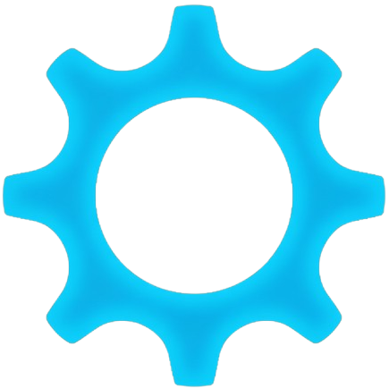

Beberapa project yang saya kerjakan dalam bidang teknologi, kecerdasan buatan, pengembangan website, dan Internet of Things.
Sistem berbasis kecerdasan buatan untuk mendeteksi penyakit pada daun menggunakan teknologi Computer Vision dan Deep Learning.
Sistem monitoring pengemudi menggunakan Computer Vision untuk mendeteksi kondisi mengantuk, mata tertutup, dan perilaku pengemudi.
Sistem IoT untuk memonitor proses pembuatan pupuk menggunakan sensor kelembapan, suhu, dan gas yang terintegrasi dengan mikrokontroler.
Website portfolio pribadi untuk menampilkan informasi diri, project, sertifikat, dan pengalaman dalam bidang teknologi.
Platform komunitas kampus berbasis blockchain untuk diskusi, tanya jawab, dan sistem reward menggunakan teknologi Web3.
Aplikasi Android untuk melakukan klasifikasi kondisi tanaman menggunakan model Machine Learning yang berjalan secara langsung pada perangkat.